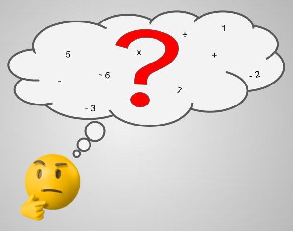

Diccionario
Asamblea
 Definición:
Definición:
Reunión de todo el grupo para hablar sobre temas de interés común y tomar decisiones.
Ejemplo:
En la asamblea decidimos ver una película.
Definición:
Reunión de todo el grupo para hablar sobre temas de interés común y tomar decisiones.
Ejemplo:
En la asamblea decidimos ver una película.
 Ha llegado el momento de poner en práctica todo lo que has aprendido con este recurso. Prepárate, ahora te vas a enfrentar al reto. Forma un equipo de 5 personas y realiza las siguientes tareas:
Ha llegado el momento de poner en práctica todo lo que has aprendido con este recurso. Prepárate, ahora te vas a enfrentar al reto. Forma un equipo de 5 personas y realiza las siguientes tareas:
Ha llegado el momento.
Pon en práctica todo lo aprendido sobre planos y mapas.
Prepárate para el reto.
Forma un equipo de 5 personas.
Realiza las siguientes tareas con tu grupo:
Tarea 1:
Tarea 2:
Empieza debatiendo con tu pareja para llegar a un acuerdo sobre los diferentes puntos del colegio.
Haced primero un borrador para poco a poco ir completando los detalles.
Tareas a realizar:
Tarea 1. Debate con tu equipo para:
llegar a un acuerdo sobre el tema y el lugar más adecuado para tu gincana.
Puedes elegir entre las siguientes opciones:
También puedes sugerir otra opción a tu maestra maestro.
Para finalizar elabora 5 pruebas y pistas como en el ejemplo para esconderlas en las posiciones elegidas. Intenta ser creativo en las pruebas, puedes usar enigmas y acertijos.
Tarea 3. Elabora 5 pruebas y pistas como en el ejemplo.
Las pistas y pruebas son para las distintas posiciones elegidas.
Intenta ser creativo en las pruebas.
Puedes usar enigmas y acertijos.
Ya has elaborado tu yincana, ahora te toca vivir la experiencia desde el otro lado. Realiza las yincanas que han elaborado tus compañeros y compañeras.
Ya has elaborado tu yincana.
Ahora realizar las yincanas elaboradas por tus compañeros y compañeras.
¿Has hablado contigo mismo para resolver las pruebas de la yincana?
No, no eres raro. Es muy frecuente que cuando estamos trabajando hablemos en silencio con nosotros mismos.
Es una forma de comprender mejor lo que hacemos y de buscar soluciones a las tareas o actividades.
De hecho, te aconsejo que lo hagas con mucha frecuencia porque te ayudará a:
Habla contigo mismo y aprenderás mejor.

Comenta en asamblea con toda tu clase la experiencia que has vivido junto a tus compañeros y compañeras. Habla de lo mejor y de lo peor. Intenta hacer propuestas de mejora.
Definición:
Reunión de todo el grupo para hablar sobre temas de interés común y tomar decisiones.
Ejemplo:
En la asamblea decidimos ver una película.
Comenta en asamblea con todos tus compañeros y compañeras de clase la experiencia de la yincana.
Habla sobre lo mejor y de lo peor de la yincana.
Intenta hacer propuestas de mejora.
Reunión de todo el grupo para hablar sobre temas de interés común y tomar decisiones.
Ejemplo:
En la asamblea decidimos ver una película.
Obra publicada con Licencia Creative Commons Reconocimiento No comercial Compartir igual 4.0